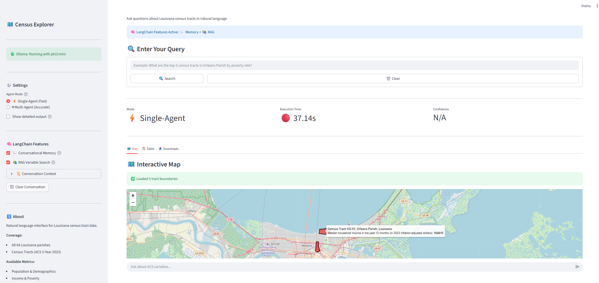
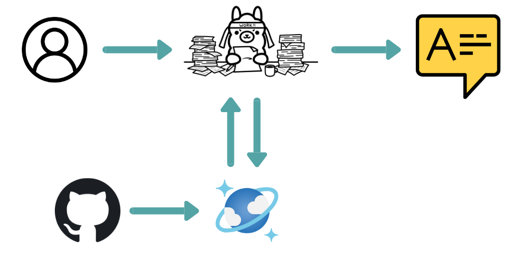
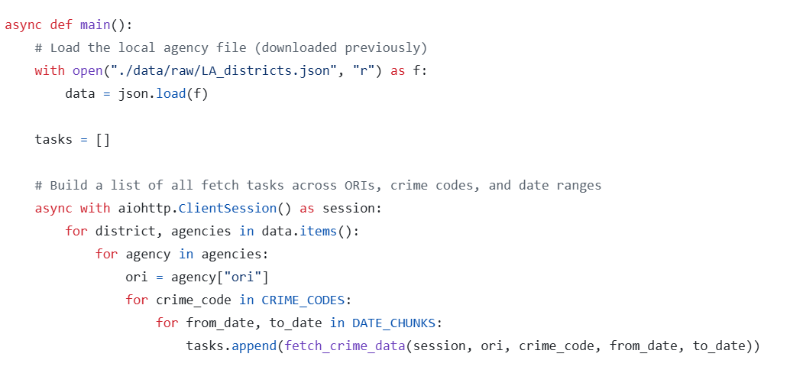
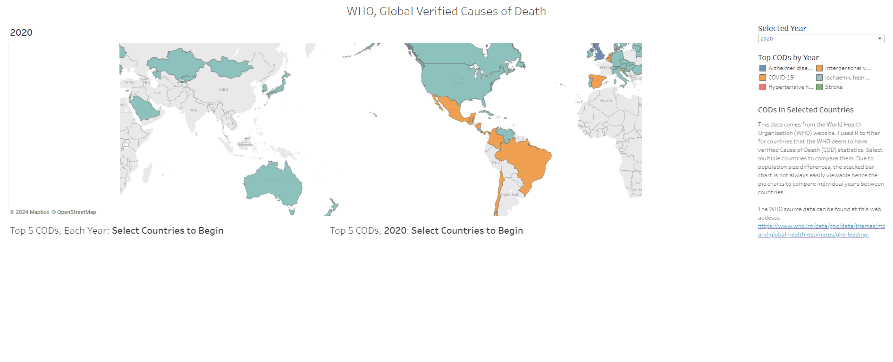
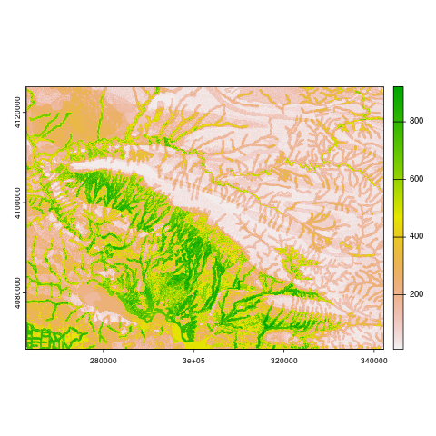
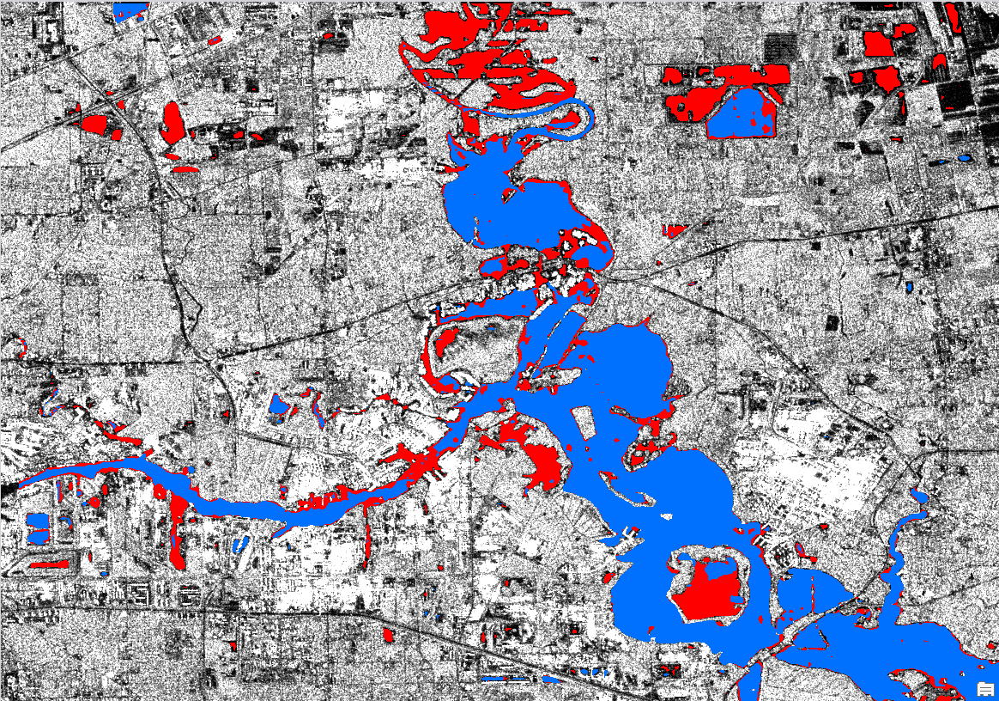
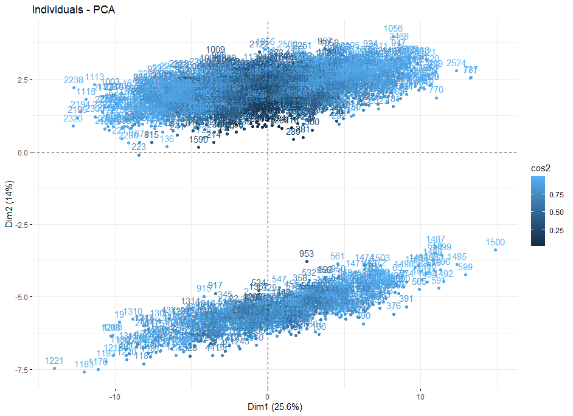
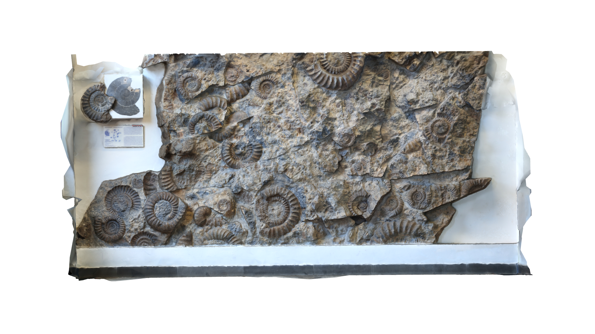

I build practical, end-to-end data and geospatial solutions – from scrapers and ETL pipelines, to interactive apps, dashboards, and research workflows. Below is a selection of projects, reorganized from my original portfolio into two groups: Interactive apps & tools and Research & methods.
Interactive apps & tools

Tech: Python · LLM · Agents · Docker
Census LLM Agent
An experimental large‑language‑model agent for exploring and querying U.S. Census data, combining natural‑language prompts with structured API calls. Containerized via Docker.
LLM Agents Docker Census

Tech: Python · Shiny · Geospatial · Satellite Imagery
Coastal Change Detection App
An easy, hands-on way for anyonem not just GIS or remote-sensing expert, to explore how coastlines change over time.
Python Shiny Environmental Remote sensing
Tech: R · Shiny · Geospatial
Waffle House Index Geospatial App
A lightning-fast custom geospatial selection and export tool built on Waffle House locations as a proxy for storm impact and service resilience. Supports interactive filtering and one-click data export for planners.
Shiny Mapping Public safety

Tech: R · Shiny · Remote sensing
Deepwater Horizon Hexadecane App
An interactive 3D geospatial app visualizing hexadecane concentrations from the Deepwater Horizon spill. Combines map-based exploration with histograms and temporal controls for scientific storytelling.
Environmental Remote sensing Visualization

Tech: Python · RAG · Local-first AI
GitHub Repository RAG (CosmosDB + Ollama)
A local-first Retrieval-Augmented Generation system that ingests large collections of GitHub repositories into Cosmos DB (emulator) and uses Ollama for embeddings and chat. Includes helpers to scrape, rank, and clone repos before ingest.
RAG Ollama Azure Cosmos
Tech: Python · Desktop app
Monte Carlo Sphere: 2D & 3D π Approximation
A standalone Python executable that demonstrates Monte Carlo estimation of π in 2D and 3D with interactive visuals. Built to show how numerical methods connect to geometry in an intuitive way.
Numerical methods Desktop Education

Tech: Python · APIs · Automation
FBI Crime Data Explorer API Bot
An asynchronous query bot that talks to the FBI Crime Data Explorer API, handles large request batches, and outputs structured results for downstream analysis.
APIs Automation Crime data

Tech: Tableau · Data viz
WHO Mortality Dashboard
A Tableau project converting a static WHO mortality analysis into a fully dynamic dashboard. Demonstrates calculated fields, parameter-driven views, and dynamic titles.
Tableau Health data

Tech: Python · QGIS
Geomorphons Feature Processing
A standalone Python workflow that plugs into QGIS to generate and process geomorphon-based terrain features, making landform classification reproducible and scalable.
Geoprocessing Terrain

Tech: R · Data viz
Chaos Game in 3D
A 2D chaos game rendered in three dimensions, used as a teaching and exploration tool for probabilistic fractal generation and advanced data visualization.
Fractals Visualization
Research & methods

Tech: Machine learning · Archaeology
Sampling Bias & Environmental Correlation in Kurdistan
A multi-model machine learning study (RF, GBM, MaxEnt) exploring sampling bias and environmental covariates in archaeological predictive mapping for Northern Iraqi Kurdistan.
Archaeology SDM Bias

Tech: Deep learning · Flood risk
Deep Learning for Flood Evaluation
An application of deep learning to evaluate flood extent and risk, combining spatial data with neural networks to improve situational awareness.
Remote sensing Flooding

Tech: 3D morphometrics
Auto-Landmarking of Human Viscerocranium
Research on automating landmark placement on 3D skull scans, using morphometric techniques to support classification and pattern detection in cranial shape.
3D Morphometrics

Tech: Statistics · Data quality
PCA for Visual Inspection of Missing Data
Uses Principal Component Analysis to visualize and diagnose missing data patterns, helping analysts understand where data gaps might bias downstream models.
PCA Data quality

Tech: Machine learning · Archaeology
Machine Learning for Archaeological Geographic Data
An end-to-end example demonstrating how ML models can support archaeological research using geographic covariates.
Archaeology ML

Tech: Photogrammetry · 3D
Structure-from-Motion 3D Photogrammetry
Demonstrates a full SfM workflow to build 3D models from overlapping photographs, used in both archaeology and environmental analysis.
Photogrammetry 3D models